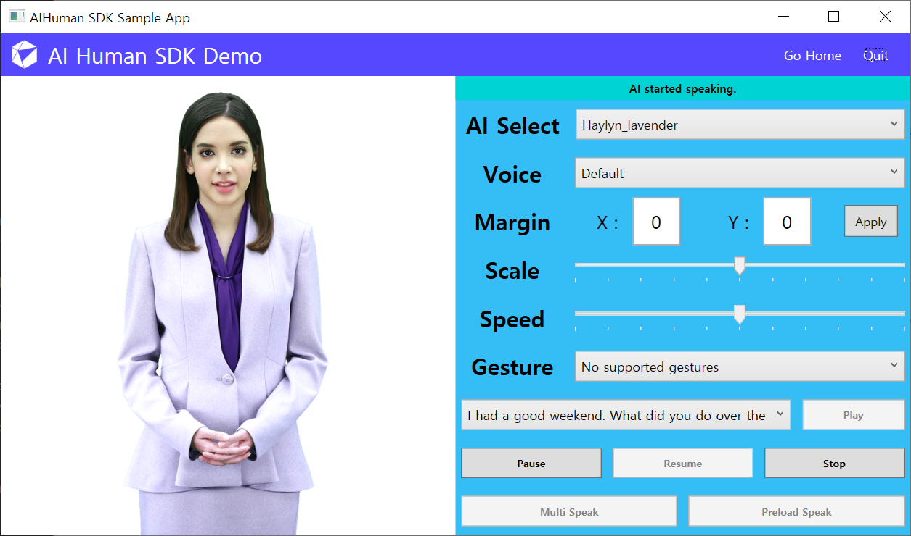
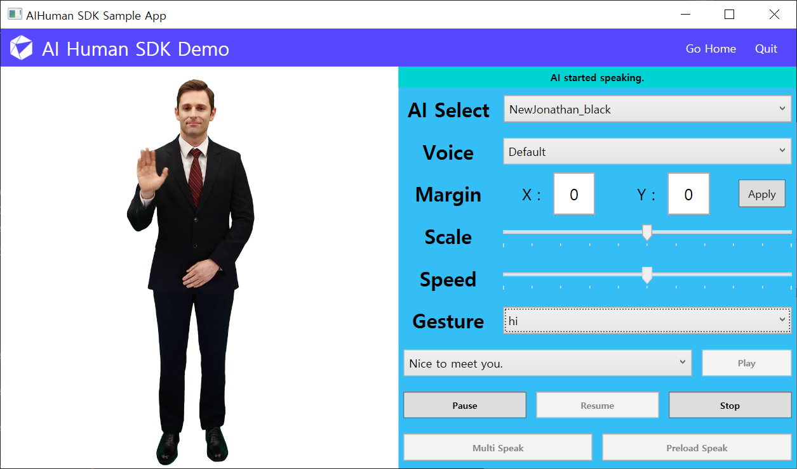
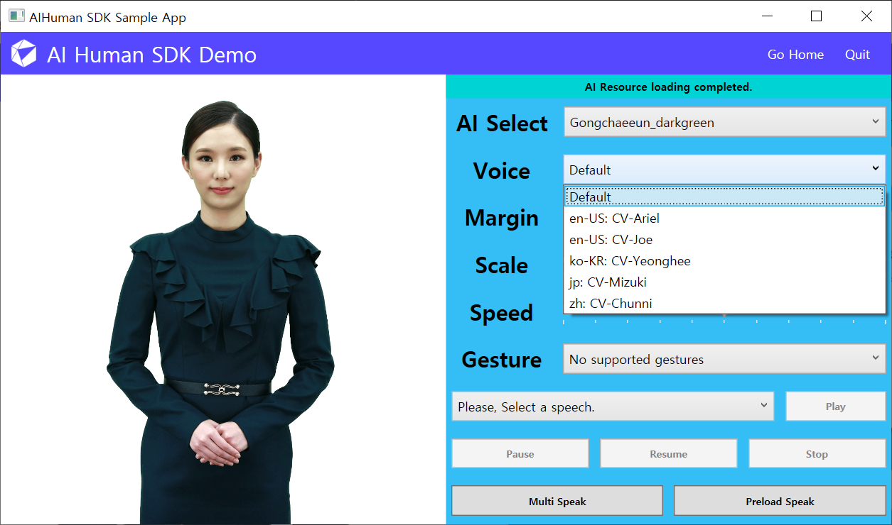
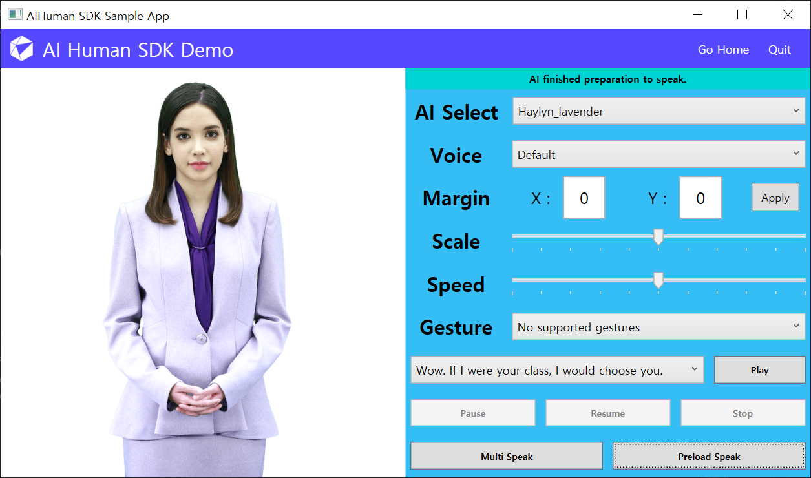
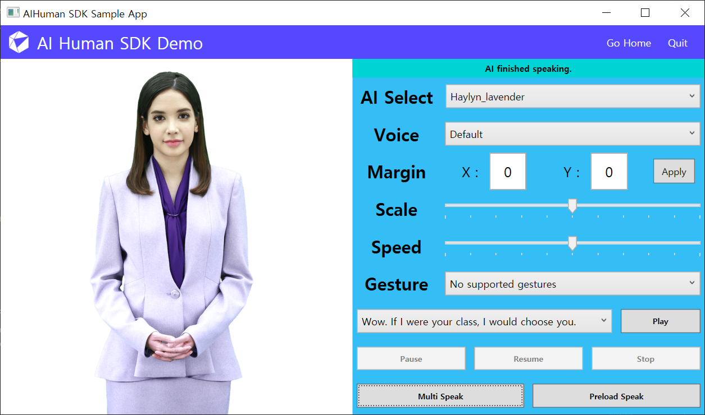
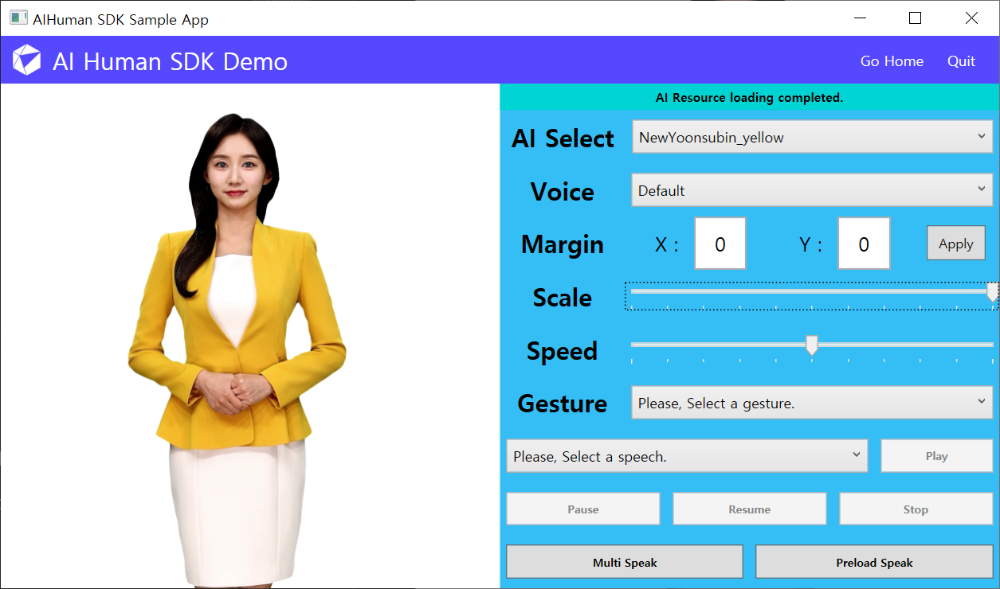
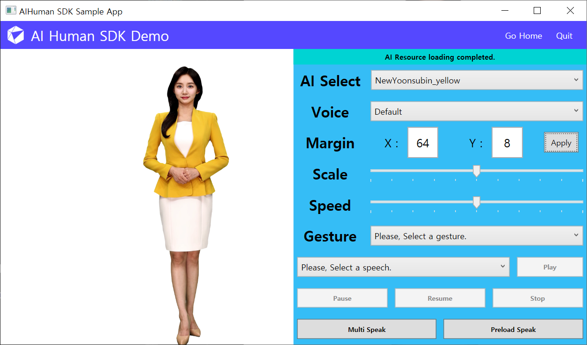

AIPlayer Description
In this chapter, we will learn how to set up and use the AIPlayer object that can perform specific actions by actually displaying AI Human.
AIPlayer consists of UserControl type View and ViewModel that controls related routines. For more details, please refer to the contents below and the main class API manual.
Dev Tips!
- The concepts of MVVM, Dependency Injection, and Data Binding are applied to AI Human SDK and WPF Sample.
- When developing a custom app by using the SDK, create an AIHuman.Media.AIPlayer object. When composing a screen, obtain a View object by using the GetObject() function of AIPlayer and place it.
- It is recommended to use Data Binding for properties such as margin, size, and speed in AIPlayer.
- For ViewModel related to SDK in Custom App, it is recommended to inherit and implement AIHuman.Common.Base.ViewModelBase, AIHuman.Interface.IAIPlayerCallback.
- It is recommended to call the Dispose() function of the object before destroying or terminating the AIPlayer. (AIPlayerViewModel is a Dispoable object.)
1. AIPlayer Set up
Full setup process (4 steps)
- Step 1: Add AIPlayer's parent layout to the page you want to use
- Step 2: Prepare AppID, authentication key, uuid, and platform that will be used in the AuthStart function
- Step 3: Get the AI to use by implementing the AuthStart response
- Step 4: Initialize AIPlayer to the desired AI
You can create AIPlayer and get the View(UserControl) object through the GetObject() function.
// practical use example
private AIPlayer _aiPlayer; // AIPlayer object to be used in cs
public AIPlayerView AIPlayerObject // View (UserControl) of AIPlayer to be used in xaml
{
get => _aiPlayer.GetObject();
private set => OnPropertyChanged(nameof(AIPlayerObject));
}
Step 1. Organize your layout
Configure the View to use AI Human in the XAML file. Create a ContentControl to place the AI and bind the AIPlayer. In the CS file, the property of the actual binding object is defined.
public AIPlayerView AIPlayerObject
{
get => _aiPlayer.GetObject();
private set => OnPropertyChanged(nameof(AIPlayerObject));
}
...
<Grid>
<Grid.ColumnDefinitions>
<ColumnDefinition/>
<ColumnDefinition/>
</Grid.ColumnDefinitions>
<ContentControl Margin="0" Grid.Column="0" Content="{Binding Path=AIPlayerObject}" />
</Grid>
...
Step 2. Prepare authentication-related information
The AuthStart function requires 4 parameters. These four are AppID, UserKey, uuid, and Platform information.
UserKey is a unique string generated by DeepBrain AI and should never be disclosed. If you call the API using this authentication key, you will receive available Default AI data and a token to be used in the future.
If token refresh is required because the token expired, it can be refreshed by calling AuthStart() again.
Step 3. Implement AuthStart and Get the AI list
If you have all the necessary AuthStart function parameters mentioned in step 2, you are ready for authentication. Input these parameters inti AuthStart AIHuam.AIAPI.Instance and implement a callback function. If authentication is successful, AI list will be returned. If you do not have permission to any of the AIs, aiList returns null.
AIHuman.Core.AIAPI.Instance.AuthStart("appId", "userKey", "UUID", "wnds"
, (aiLIst, error) =>
{
string message = string.Empty;
if(string.IsNullOrEmpty(error) && aiLIst != null)
{
string jsonStr = aiLIst.Root.ToString();
AIHuman.Core.AIAPI.AIList list =
Newtonsoft.Json.JsonConvert.DeserializeObject<AIHuman.Core.AIAPI.AIList>(jsonStr);
message = string.Format("Auth Complete, Avaliable Count : {0}", list.ai.Length);
/* e.g.)
"succeed":true,
"ai":[{"aiName":"vida","aiDisplayName":"Vida","language":"en"},
{"aiName":"bret","aiDisplayName":"Bret","language":"en"},
{"aiName":"danny","aiDisplayName":"Danny","language":"en"},
{"aiName":"kang","aiDisplayName":"Kang","language":"ko"}]
*/
}
else
{
message = string.Format("Auth Error : {0}", error);
}
AIHuman.Util.Log.LogWrite(message);
}
);
Step 4. Initialize AIPlayer to the desired AI
After authenticating and checking the list of available AIs, it is necessary to initialize the AI first in order to actually use a specific AI. To initialize it, create AIPlayer with the desired AIName as shown below. If there is an existing AIPlayer, delete it and create a new one.
Once you initialize, AIPlayer downloads necessary resources based on initial settings and becomes active. You can also receive AI status through callback function registered in the second argument of the AIPlayer constructor.
...
public AIPlayer AIPlayerObject // View Binding object
{
...
}
...
private void UpdateSelectedAI()
{
if (_aiPlayer != null)
{
_aiPlayer.Dispose();
_aiPlayer = null;
}
if (_speechList != null)
{
_speechList.Clear();
_speechList = null;
}
AIPlayer _aiPlayer = new(SelectedAI.AIName, this);
AIPlayerObject = _aiPlayer.GetObject();
SpeechList = new ObservableCollection<string>(AIAPI.Instance.GetSampleTexts(SelectedAI.AIName));
SpeechList.Insert(0, Resource.DefaultSpeech);
...
}
2. AIPlayer Resources and States
Start loading resources
When AIPlayer is created after authentication is completed, resource loading starts according to the input AIName, and the resource loading status is reported to the listener (IAIPlayerCallback) registered in the constructor. (Initially, it may take a few minutes for the resource to complete loading.)
Monitoring player state through IAIPlayerCallback implementation
The values for the parameter AIState.state in the listener method onAIStateChanged(AIStatePublisher.AIState state) are shown below. You can also implement loading progress with onAIPlayerResLoadingProgressed(int current, int total).
- AIState.RES_LOAD_STARTED : resource loading is started.
- AIState.RES_LOAD_COMPLETED : resource loading is completed.
If there is any problem during this process, the onAIPlayerError() method is called. Typically, a response from the onAIPlayerError() may be notifying the expiration of the authentication token. An appropriate response is required depending on the situation.
- AIError.SDK_API_ERR : Notifies error in authentication process API.
##### e.g.) 1402 error (value token expired): Token refresh required -> Call AuthStart() method again
// AI resource related status CallBack
public void onAIStateChanged(AIState state)
{
...
if (state.state == AIState.RES_LOAD_STARTED)
{
message = "AI Resource loading started.";
...
}
else if (state.state == AIState.RES_LOAD_COMPLETED)
{
message = "AI Resource loading completed.";
...
}
...
}
// AI resource loading progress CallBack
public void onAIPlayerResLoadingProgressed(int current, int total)
{
float progress = ((float) current / (float) total) * 100;
message = string.Format("AI Resource Loading... {0}%", (int)progress);
}
// AI error CallBack
public void onAIPlayerError(AIError error)
{
if (error.SDK_API_ERR == error.errorType)
{
Debug.LogError(string.Format("sdk_ai_Info error : {0}", error.exInfo));
string errorDesc = error.exInfo;
if (string.IsNullOrEmpty(errorDesc))
{
JSONObject json = null;
try
{
json = new JSONObject(errorDesc);
}
catch (JsonException ex)
{
Log.log(ex.Message);
Debug.LogError(string.Format("Json Exception Error : {0}", ex.Message));
}
if (json != null && json.optInt(Constants.KEY_ERRORCODE, -1) ==
Constants.API_ERRORCODE_TOKEN_EXPIRED)
{
// refresh token
}
}
}
}
3. AIPlayer Basic Speaking Features
Basic Speaking using AIClipSet and Monitor AI Speaking
After AIPlayer resource is loaded, call Send method. To activate the function, in the sample below, select the sentence to speak through the drop-down menu and click the Play button on the right.
In general, speech can be performed using pure text, but speech can also be performed using AIHuman.Common.Model.AIClipSet. Also, speech can be performed along with a specific gesture. For example, you could instruct the AI to say hello by waving his hand. This is called gesture speech. Details are explained in Gesture speech related parts.
If the text to speak is too long, it may not be possible to synthesize the resources required for the utterance. There are some models that can synthesize long sentences. Although it varies from ai to ai, it is generally recommended that sentences be cut to an appropriate length in Korean, usually within 30 to 40 characters, and at a similar level in English.

// using pure-text
_aiPlayer.Send(new[] {"this is sample sentence."});
// using AIClipSet
AIClipSet clip = AIAPI.CreateClipSet("this is sample sentence.");
_aiPlayer.Send(new[] {clip});
Speaking related Monitoring
After the Send method is called, you can listen to the operation status feedback in the registered listener. This feedback is returned by calling the method (onAIStateChanged) of the listener(IAIPlayerCallback). onAIStateChanged sequentially returns the following AIState values.
- SPEAKING_PREPARE_STARTED
- SPEAKING_PREPARE_COMPLETED
- SPEAKING_STARTED
- SPEAKING_COMPLETED
// Speaking related CallBack example
public void onAIStateChanged(AIState state)
{
if (state.state == AIState.SPEAKING_PREPARE_STARTED)
{
_txtStatus.text = "AI started preparation to speak.";
}
else if (state.state == AIState.SPEAKING_PREPARE_COMPLETED)
{
_txtStatus.text = "AI finished preparation to speak.";
}
else if (state.state == AIState.SPEAKING_STARTED)
{
_txtStatus.text = "AI started speaking.";
}
else if (state.state == AIState.SPEAKING_COMPLETED)
{
_txtStatus.text = "AI finished speaking.";
}
}
// AI error CallBack example
public void onAIPlayerError(AIError error)
{
if (error.errorType == AIError.SOCKET_ERR)
{
_txtStatus.text = "Socket Error: " + error.exInfo;
}
else if (error.errorType == AIError.RES_LOAD_ERR)
{
_txtStatus.text = "Resource Error: " + error.exInfo);
}
else if (error.errorType == AIError.SPEAK_SEND_ERR)
{
_txtStatus.text = "Speak Error: " + error.exInfo);
}
}
AIPlayer Speaking related Features
The following are actions that can be performed while the AIPlayer is Speaking.
Pause speaking
: Pause speaking.
// pause method
_aiPlayer.Pause()
Resume Speaking
: Resume speaking. (resume from pause)
// resume method
_aiPlayer.Resume()
Stop speaking
: Stop speaking and reset all data. (cannot resume)
// stop method
_aiPlayer.StopSpeaking()
4. AIPlayer Advanced Speaking Features
All functions other than speaking(mostly related to AI settings) of AIPlayer are described below.
After the resource load required for AI operation is completed, some settings of AIPlayer can be adjusted. When the resource loading is completed (RES_LOAD_COMPLETED), the state changes such that actual operations can be performed(Idle). On right side of the panel, Voice, Gesture, Speed, etc. can be adjusted as shown below.
Change AI Speech Rate
: You can set the speech rate of AI. The possible value range is from 0.5 to 1.5.
// set Property
_aiPlayer.Speed = value;
Gestures
As briefly mentioned above, speech can also be performed using ClipSet. The ClipSet here refers to one action unit in a series of AI actions. There are three types of ClipSet: general speech that performs only speaking, speech with gesture, and gesture only. The Gesture can be used depending on whether the AI model supports Gestures, and the list of available gestures can be checked using the GetGestures function of AIPlayer. Even a model that does not support gestures can be operated using ClipSet.
Clipset types are as follows.
- Clip Type
- CLIP_SPEECH: Clip only for speech without gestures
- CLIP_GESTURE: Gesture only Clip
- CLIP_SPEECH_GESTURE: Clip for speech with gestures
In the sample screenshot below, an AI model named Jonathan is speaking while waving his hand with a "hi" gesture.

using AIHuman.Common.Model;
using AIHuman.Core;
using AIHuman.Media;
...
private ObservableCollection<AIGesture> _gestures;
...
_gestures = _aiPlayer.GetGestures();
...
AIGesture gesture = _gestures[index];
AIClipSet clip = AIAPI.CreateClipSet("nice to meet you.", gesture.Name);
_aiPlayer.Send(new[] {clip});
Monitoring callbacks of gesture actions
IAIPlayerCallback.OnAIStateChanged(AIState) is called in the same way as the speech actions. The state value of AIState is called as follows to know the state. However, since AIState.GetAIMsg().Clip.Type, GestureName, and SpeechText are known here, it is possible to know whether it is a gesture action or just a speech action.
- SPEAKING_PREPARE_STARTED
- SPEAKING_PREPARE_COMPLETED
- SPEAKING_STARTED
- SPEAKING_COMPLETED
Change the Voice or Language
Some AIs can speak with other voices besides basic voices. It is also possible to speak other language than the basic voice's language if the supported voice's language is different from the basic language of AI. You can check the sample for a list of voices that are currently available to a AI.

Set the custom voice using AIPlayer's method
You can check which voice AI can use by the following method. CustomVoice has properties of id, name, language, and tag.
ObservableCollection<CustomVoice> customVoices = _aiPlayer.GetCustomVoices();
If you know the id of the desired voice, you can find the desired voice using the following method. If there is none, return null.
CustomVoice myVoice = _aiPlayer.FindCustomVoice(voiceId);
Direct change to the desired voice on the aplayer is set as follows, and is set to the default voice when null is entered. Returns true when success.
CustomVoice myVoice = _aiPlayer.GetCustomVoices()[2];
_aiPlayer.SetCustomVoice(myVoice);
Set the custom voice using AIClipSet
In addition to the method of using the setCustomVoice method to set a voice other than the basic voice, AIClipSet can be used to speak the desired voice as follows.
CustomVoice myVoice = _aiPlayer.GetCustomVoices()[0];
AIClipSet aiClipSet = AIAPI.CreateClipSet("this is sample sentence.", null, myVoice);
_aiPlayer.Send(new[] {aiClipSet});
Preload
Preload is used when you want to make the AI speak the next sentence without delay by loading sentences in advance. You could think of it as a caching process. Select a sentence and press the Preload button in the sample below to perform the corresponding action.

// using pure-text
_aiPlayer.Preload(new[] {"sentence"});
// using AIClipSet
_aiPlayer.Preload(new[] {clip});
Preload related Monitoring
AIPlayerCallback.onAIStateChanged(AIState) is called during the preload operation just like the speaking operation. The value of AIState is shown below.
- SPEAKING_PREPARE_PRELOAD_STARTED
- SPEAKING_PREPARE_PRELOAD_COMPLETED
When the AI has several sentences to speak, it first processes the very first sentence. Once the returned state from onAIStateChanged is SPEAKING_STARTED, which is when the AI starts to speak the first sentence, the next sentence can be preloaded. If you play the next sentence after the state update to SPEAKING_PREPARE_PRELOAD_COMPLETED, there will be minimum delays between sentences.
// AI Preload related CallBack
public void onAIStateChanged(AIState aiState)
{
...
if (aiState.state == AIState.SPEAKING_PREPARE_PRELOAD_STARTED)
{
_txtStatus.text = "AI started preparation to preload.";
}
else if (aiState.state == AIState.SPEAKING_PREPARE_PRELOAD_COMPLETED)
{
_txtStatus.text = "AI finished preparation to preload.";
}
...
}
Speak Multiple Sentences Consecutively
You can give AIPlayer several sentences at once and make them speak sequentially. In the sample, multi-speaking is performed by selecting random sentences from sentences in the ComboBox. It can be one sentence or it can be several sentences. Press the Multi Speak button in the app below to perform the operation.

// using pure-text
_aiPlayer.Send(new[] {"sentence1", "sentence2"});
// using AIClipSet
_aiPlayer.Send(new[] {clip1, clip2});
Multi Speak related Monitoring
IAIPlayerCallback.onAIStateChanged(AIState) is called for each sentence. The possible AIState values are shown below.
- SPEAKING_PREPARE_STARTED
- SPEAKING_PREPARE_COMPLETED
If you send several sentences, it automatically preloads if possible. In this case, you can see that the delay between utterances when the AI speaks is reduced.
5. Functionalities other than AI Speaking (mainly related to AI settings)
After the resource is loaded, some settings of aiPlayer can be changed while the actual operation is on. In the sample project screen below, you can see that Scale, Margins, etc. can be adjusted.
Change AI Size(Scale)
 : You can set the size(scale) of AI. The possible value range is from 0.5 to 1.5.
// set Property
_aiPlayer.Scale = value;
Change AI Position(Margin)
 : You can change the position(margins) of AI. It can be adjusted based on the X-axis(Horizontal) and the Y-axis(Vertical).
AIHuman.Common.Margin _aiMargin;
_aiMargin.X = 64;
_aiMargin.Y = 8;
// set Property
_aiPlayer.Margin = _aiMargin;
6. Error Index
You can receive the error code and its details as a callback(onAIPlayerError) and take appropriate action.
When an error occurs, the onAIPlayerError(AIError) callback function is called. AIError, the argument of this function, contains information about the error. AIError.errorType tells what kind of error has occurred, and you can find out the details of the error as JSON String through the getMessage() function.
By using this message, you can take action when a specific error occurs. For example, code 1402 may mean Token expired, and in this case, call AuthStart() to refresh the token.
Check the full error types here.